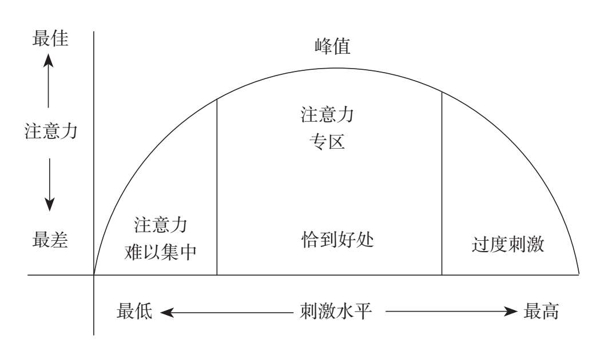

当科技的进步使信息的交流和传递越来越迅速的时候，人们对于时间与注意力的掌控开始降低。手机上不断弹出的提示是每个现代人都会遭遇的干扰，不论你正在做什么，手机都可能打断你。当你集中精力阅读时，社交软件可能会打断你，让你不得不切换到其他事情上；当你认真工作时，手机通知可能会引导你浏览其他App；当你躺下准备入睡时，几个短视频可能会推迟你的睡眠时间……
除去工作、睡眠以及一些必要的时间支出，比如通勤、吃饭、聚会、娱乐等，大部分成年人每天只有两个小时左右的时间可以用来学习。美国麻省理工学院计算机科学博士卡尔·纽波特曾说：“高质量的产出=专注度×时间。”在学习时间均为仅有的两个小时的情况下，高度专注和分心走神的学习效果可谓是天壤之别。
美国心理学协会的《心理学词典》对分心的描述是：“打断注意力的过程”，以及“让注意力从目前最重要的事物上转移开的刺激”。换句话说，如果分心成为一种习惯，我们可能就无法在学习过程中保持注意力，而注意力恰恰是保持学习效率的重要因素。
早在2015年，微软加拿大分公司曾发布过一篇报告，称“人类的注意力比金鱼还要短”。根据这篇报告，2000年所调研的人类平均注意力跨度为12秒；而2013年的调研数据显示，人类平均注意力跨度只有8秒（金鱼的平均注意力跨度为9秒）。是什么对我们的注意力产生了这么大的负面影响呢？
所有的人类行为都是由内部诱因或外部诱因诱导的，学习时注意力的缺失也不例外。
内部诱因：内部刺激水平没有达到最佳状态
生物学研究表明，事物对人产生刺激时会促使人体分泌肾上腺素，肾上腺素分泌的多少则直接决定我们对某事物感到兴奋还是感到无聊。这个兴奋或无聊的程度，叫作“刺激水平”，而刺激水平的高低又决定了注意力的高低。专注于注意力研究的美国心理学博士露西·乔·帕拉迪诺根据大量实验和调查研究结果，将刺激水平和注意力之间的关系绘制成了著名的“注意力曲线”。

这条注意力曲线呈现倒“U”形，像一个两边低、中间高的锅盖。横向的X轴，代表一件事情给我们带来刺激水平的强度；纵向的Y轴，代表我们在这件事情上投入的注意力。在一开始刺激水平低的时候，我们的注意力也低；随着刺激水平越来越高，注意力也越来越高。但是，当注意力达到一个顶点时，刺激水平哪怕再继续提高，注意力也不会随着升高，反而会下降，直到降为0。
帕拉迪诺对此的解释是：当我们受到的刺激水平很低时，肾上腺素的分泌水平也低，此时，我们会对正在做的事情提不起兴趣，精神颓废，深感无聊，甚至昏昏欲睡，思维也常常变得呆滞。这是倒U形曲线最左边的部分，即刺激水平低，注意力不集中。比如，一旦遇到一个照本宣科的老师，他讲课时毫无新意，我们便会哈欠连连，神游九天。
相反，当我们受到的刺激水平很高时，肾上腺素的分泌水平也会变高。物极必反，此时我们很容易陷入另一个极端：过度亢奋，甚至焦虑、紧张、愤怒和恐惧。回想我们参加重要考试、重大比赛，或是第一次上台演讲时，是不是经常会感到呼吸加重、心跳加速、大脑一片空白，甚至完全无法思考？这就是倒U形曲线的最右边部分——刺激水平太高时，你的注意力水平反而很低，没办法专心做好眼前的事情。
所以，只有在刺激水平既不是很高，也不是很低的时候，我们才不会过于紧张，也不会过于松弛，此时我们的心态最平和，头脑最清醒，注意力最集中。这就是倒U形曲线的中间部分，心理学家把这种恰到好处的刺激状态叫“最优刺激”。此时，我们的注意力也会达到峰值，帕拉迪诺称之为“注意力专区”，它是我们学习时注意力能够保持的最理想状态。
注意力的高低，会随着外界刺激大小的变化，形成一条倒U形的曲线。对大部分普通人来说，刺激水平过高是在一些特殊场景才会产生的应激状态，所以过度紧张并不是自主学习的常态，我们更多时候面临的问题是刺激水平不够，在学习过程中提不起精神，即因为内部刺激水平过低而分心走神。
外部诱因：注意力被外部“刺激-反应”的惯性带跑
进化心理学认为，我们都是“认知上的懒散者”。我们的大脑喜欢无意识地遵循“刺激–反应”的惯性，一旦受到外界刺激，就会不自觉地做出反应，尤其是遇到对认知消耗比较少的事情时，大脑往往会任由它不断分散我们的注意力。
例如，一旦手机发出新消息的提示音，我们就会很自然地打开手机查看。除此之外，邮件提醒、新闻弹窗，也可能是他人正在热火朝天地打游戏，甚至只是路过公交站牌时看到一闪而过的广告——它只是在我们面前出现了2秒钟，就会让我们不由自主地分心走神。
因为在认知上过于懒散，我们时刻都想要摆脱“认知不适”的欲望，渴求从学习的痛苦中解脱出来。沉溺于电子游戏、社交媒体和手机，不仅是因为它们可以给我们带来乐趣，还因为这些行为可以让我们从大脑耗能的痛苦中得到短暂解脱。但是，这些来自身边环境的干扰源，看似耗时不长，却在不知不觉间将我们的注意力切成碎片。
从这个意义上看，外界的任务和时间都无法被管理，要想将注意力集中在最重要的事情——学习上，我们可以管理的只有自己。管理自己不仅仅是防止自己不被打扰，更重要的是更新我们的思维方式，学会与干扰恰当共处。
为了提高学习这件事的内部刺激水平，同时与外部干扰恰当相处，实现对注意力的调控，我们可以按照以下三个步骤调整思维流程。
第一步：观察自我。观察自我，就是对自己的身心状态做出评估，大致判断自己的肾上腺素分泌水平，了解自己是否在注意力专区里。值得强调的是，完成这个评估并不需要使用专业仪器，我们很容易就能感知自己是无聊、放松、兴奋还是紧张，并且为其打分。
我们可以把注意力最放松的水平设定成0分，最紧张的水平设定成10分，那么理想的“注意力专区”水平就在5~7分之间。然后，对照这个评分系统，你可以大致对自己的注意力水平进行评估。如果感到比较紧张，就可以给自己打7~8分；如果感觉很放松，就打1~2分。知己知彼，方才百战不殆，观察自我，从宏观上把握自己的注意力水平，这是我们调控注意力的前提与基础。
第二步：调控自我。注意力的倒U形曲线告诉我们，无法进入注意力专区的原因无非有两个：要么是刺激过度，要么是刺激不足。因此，调控自我的本质在于振奋精神或放松心情。当你的情绪过于激动兴奋时，可以采取必要的方法平静与放松，以此来降低体内肾上腺素的分泌水平；当你感到无聊、乏味时，我们要采用适当的方法来振奋精神，重拾活力，提升肾上腺素的分泌水平，将注意力提升到注意力专区。
当你观察自我时，发现精神不佳且注意力不在注意力专区时，就要想办法调节内部刺激水平。众所周知，音乐能够带动人的情绪，当我们只能给自己的注意力水平打1~2分，感觉自己很疲惫、颓废、无聊时，可以尝试边听音乐边学习，这样可以让自己快速兴奋起来。而当我们给自己打7~8分，感觉到高度紧张、焦虑时，同样可以尝试边学习边听一些舒缓的音乐，以此缓解焦虑情绪，降低刺激水平。
除了音乐疗法以外，我们感到紧张时也可以尝试一种叫作“溪上落叶”的方法：想象自己站在一条小溪边，小溪上的树叶轻轻飘过，把我们脑海中的每一个消极的想法和感觉都放在一片树叶上，想象它们随水流飘走。不论是音乐疗法，还是“溪上落叶”法，它们的本质都是通过探索身体的感受，从而调节内部刺激水平。
不过，音乐刺激这个方法用得不好很容易变成一种外部干扰，因此，我们在使用音乐刺激时要注意两点：第一，并不是所有音乐都能让我们兴奋，合适的音乐需要我们平时根据自己的性格特点、兴趣爱好去积累；第二，最好选择纯音乐，不要选择我们熟悉歌词和旋律的歌曲，因为一旦我们能听懂歌词，注意力就很容易被歌词和旋律带走，这样反而分散了我们的注意力。
只有当我们既不理解歌词意思，又不熟悉音乐旋律时，我们才能随着音乐节奏调节自己，将自己从过激或过于低迷的状态，调整到一个平和的状态里，慢慢将注意力集中到学习上。
第三步：忘记自我。忘记自我，本质上是让我们放下“对抗外部常态干扰”的执念。在我们对抗一个问题之前，可以先问问自己：“这是世界的常态，还是可以按照我的想法改变？”毫无疑问，这个世界有很多问题无法按照我们的意愿进行改变。如果我们错把世界的常态当作要对抗的问题，就很容易陷入反复失败的境地，形成恶性循环。因此，我们需要对此高度警惕。
例如，你难免偶尔失眠。如果失眠的人一直把注意力过度集中在“对抗失眠”这件事上，时刻想着“我怎么还没睡着？我到底是因为什么睡不着？”，甚至当他疲惫中迷迷糊糊快要睡着的时候，脑海中又突然冒出“我快要睡着了”的念头，就很容易功亏一篑，马上清醒。是的，我们想对抗失眠的念头加剧了失眠，它变成了一种恶性循环。
所以，心理学家对失眠者提出的建议大都是：学会忘记自我，也就是舍弃对“睡不着”的执念，把注意力集中到“睡不着”以外的事物上。比如，想象自己在天空中自由下坠，想象自己在海滩上享受海风的吹拂、海浪的拍打，或是想象任何一件让我们觉得开心的事。当我们忘记自我、忘记“睡不着”这件事本身的时候，不知不觉就睡着了。
这种方法其实就是心理学上著名的“森田疗法”，它的核心理念是：带着问题生存，为所当为。简单来讲，我们不需要过于纠结自己面对的问题，可以把它当作生存的常态，专注于自己真正想做的事情——这也正是忘记自我的真谛。
同样，回到学习中，我们要舍弃“对抗外界干扰”的执念，不要纠结于各种干扰因素，而是将它当作我们工作、学习中的常态，尝试与干扰因素握手言和。因为很多时候，你越是在意干扰因素，你的注意力就越容易被其分散。所以，不妨把注意力集中在学习这件事本身，从学习中寻找一些具有“形式感”的东西，将注意力集中在通过完成学习任务去获得这种形式感。
比如，阅读一本书时，你可以把这个“形式感”设定成书中的句号，把注意力集中在每个句子的句号上，通过阅读寻找到一个又一个句号，不知不觉中你就会进入学习状态。
当然，我们不可能长期保持在这种状态中，很多事情会让我们的注意力发生起伏。没关系，意识到注意力被分散时，重复前面的三个步骤即可：学会观察自我；一旦发现自己不在5~7分的注意力专注区间，就要想办法调控自我，做升温处理或降温处理；最后试着忘记自我，把注意力集中到与学习相关的事物上。
专注能使我们集中所有能量，清晰而迅速地定焦、集中、指向某一事物，在干扰环境中朝着自己真正想要的方向坚定前进。在漫长的人生中，凡是硕果闪现的时刻，大多是我们高度专注的时刻。正因如此，学会探索身体的感受，提高内部刺激水平，进入注意力专区，恰当应对外界干扰因素——哪怕一个物体、一个场景、一个人，也能接纳其存在状态，为真正重要的事情找到仪式感，给予专注，就显得格外重要。